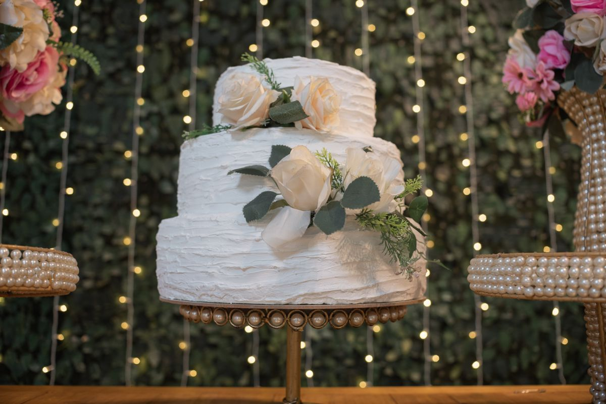
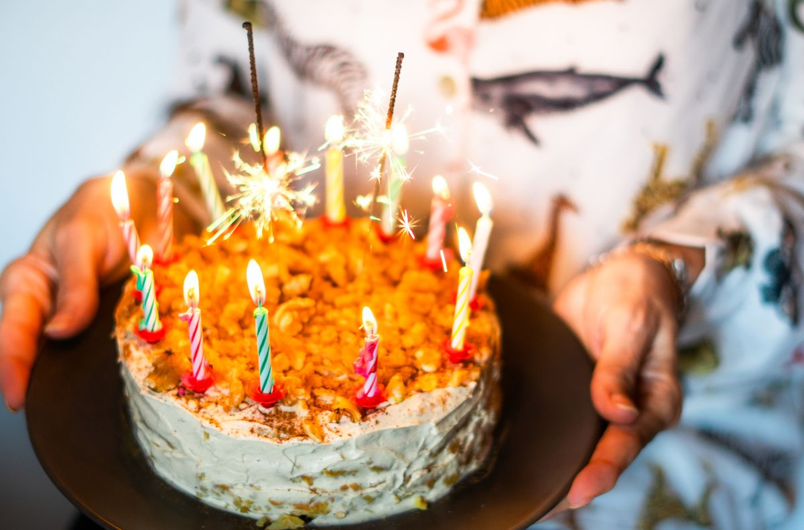
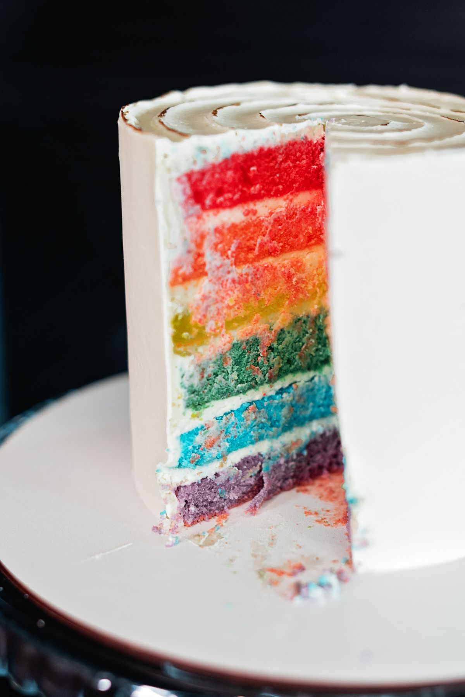
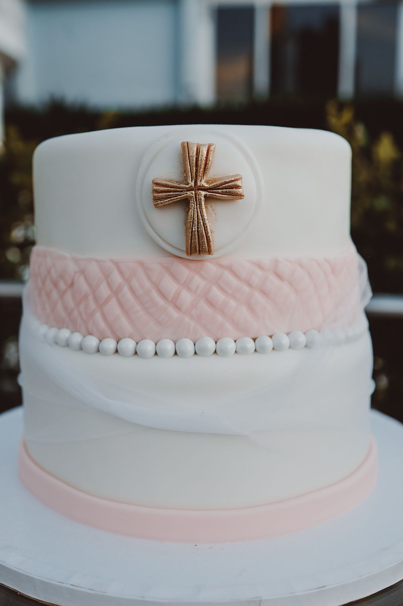
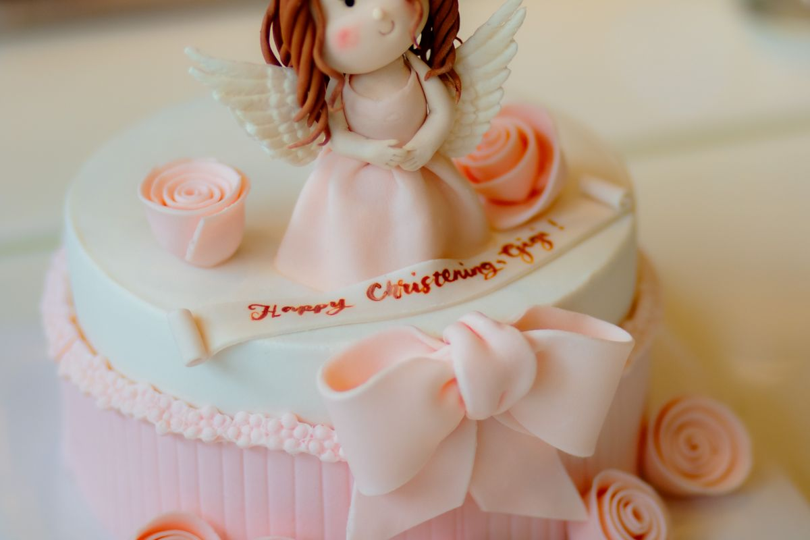
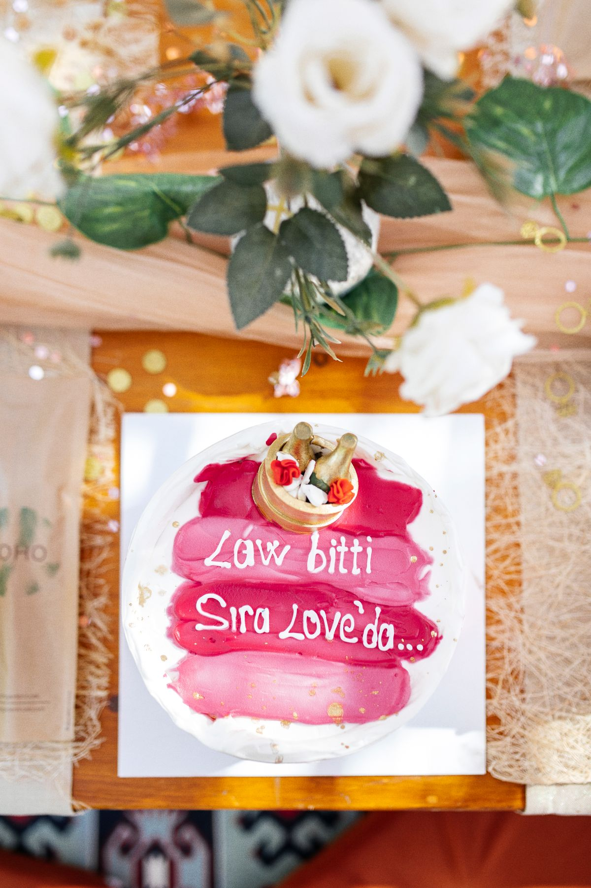
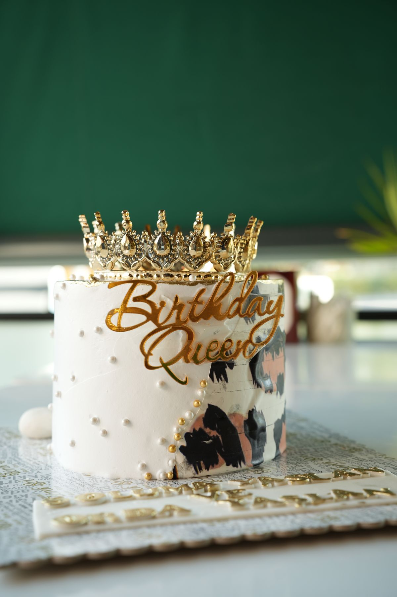

Schautorten
Für jeden Anlass
eine Torte
Ein Geburtstag, eine Hochzeit oder etwas Ähnliches – und noch keine Idee? Wir fertigen Torten in jeder Größe und Form, mit oder ohne Motiv, ganz nach Anlass.







Sonderwünsche
Für jeden Anlass
Für jeden Anlass
etwas Besonderes
Ob Hochzeit, runder Geburtstag oder Firmenfeier – wir fertigen Torten und Gebäck ganz nach Ihren Vorstellungen. Sprechen Sie mit uns über Form, Füllung und Anlass, wir beraten Sie gern.